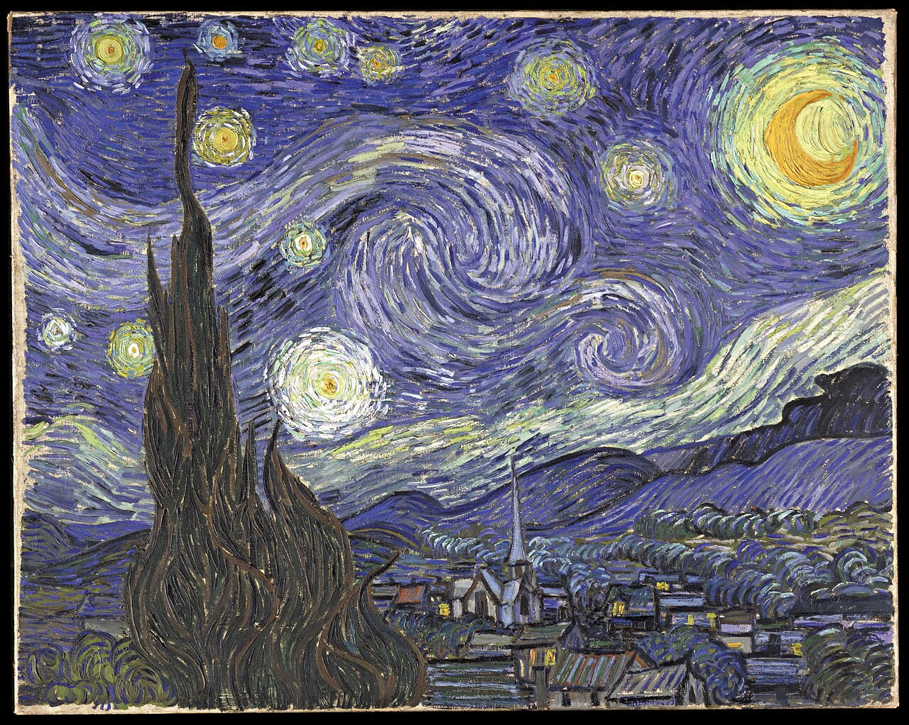

Psalm 8 — The Mister Translation

Psalm 8. Van Gogh painted this in 1889 while staying at the asylum in Saint-Rémy; it is not a scene from the psalm, and the psalm names no village or tree. What it shares with the psalm is the sky the psalm looks at: the moon and the stars, and nothing else lit but a few windows, and a small place under a very large night.

Translator's Notes — verse by verse
⭐ The heading. Lamnatzeach, for the director (dictionary), mizmor, a psalm (dictionary), and le-David, of David, are the standing words of Psalm 19’s heading too (now on these pages). What is new is al-hagittit, “upon the Gittith” (dictionary). The phrase stands in three verses of the Hebrew Bible, all of them headings: this one, Psalm 81:1 and Psalm 84:1. The word is not explained anywhere in the text, and this translation leaves it as the name it is. ⚠ The letters are those of gat, the Philistine city of Gath, where David stayed with Achish (1 Samuel 27:3, now on these pages; the heading of Psalm 56 names the city too), and of gat, a winepress, where Gideon beats out his wheat (Judges 6:11, now on these pages). The shelf is split the same way. The NWT 1984 only transliterates it, “the Gitʹtith”; the RV 1909 does the same, «sobre Gittith»; and the Douay, which translates the Latin, has “for the presses”. The page does not vote.
⭐ The numbers. In the Hebrew the heading is verse 1, so “Jehovah our Lord, how mighty is your name” is verse 2 and the closing refrain is verse 10. Six of the seven versions on the shelf leave the heading unnumbered and begin at the first line of praise: the KJV, the ASV, the NIV, the NWT 1984, the TLB and the Geneva. The Douay counts the heading as verse 1, as the Hebrew does, because the Latin Psalter that it translates does. So every verse here is one more than the number printed in those six, and a reader who looks up “Psalm 8:5” in an English Bible is looking for verse 6 on this page.
⭐ “Mighty”. Adir is the word for what is strong enough to be great (dictionary). The word and its family stand in twenty-three verses of the Hebrew Bible, this verse and verse 10 among them, and the nearest to this one are all about force: the Egyptians “sank like lead in the mighty waters” (Exodus 15:10, now on these pages), and “mighty on high is Jehovah”, said after the breakers of the sea, which are mighty too (Psalm 93:4). The shelf splits three ways. The KJV has “how excellent is thy name”, the ASV “How excellent is thy name”, the Geneva “how excellent is thy Name”, the NIV “how majestic is your name”, the NWT 1984 “how majestic your name is” and the Douay “how admirable is thy name”. The TLB turns the line into “the majesty and glory of your name fills all the earth”. This translation prints “mighty” because the next verse is about strength (oz), and because “majesty” is kept for hod in the second half of this very verse (dictionary). The Geneva has “in all the world” for bekhol-ha’arets, “in all the earth”.
⚠ “You who have set your majesty above the heavens”. The last words of the verse are the hard ones. Tenah is spelled and pointed as the command “give!”, and it stands so elsewhere: “Give me my wives and my children” (Genesis 30:26, now on these pages), “Give us a holding among the brothers of our father” (Numbers 27:4, now on these pages). A command does not follow “you who”, so readers take it as a form of the same verb standing for “who have set”, or as another verb, tanah, “to recount”, the verb of “there they recount the righteous acts of Jehovah” (Judges 5:11, now on these pages). The shelf follows both. The KJV has “who hast set thy glory above the heavens”, the ASV “upon the heavens” and the NIV “in the heavens”; the NWT 1984 has “whose dignity is recounted above the heavens”; and the Douay has “thy magnificence is elevated above the heavens”. The TLB says it “overflows the heavens”. All of them print “glory” or “dignity” or “magnificence” for hod, which this library keeps apart from kavod, “glory” (dictionary). The translation keeps “set”, and the doubt is in this note.
⭐ “Children and sucklings”. Olelim are small children (dictionary), and yonqim are the ones still at the breast, from the verb to suck (dictionary). The pair, in the singular, stands in two verses of the Hebrew Bible, and both are about a people being cut down: Jehovah asks Judah why it is cutting off from itself “man and woman, child and suckling” (Jeremiah 44:7), and the poet of Lamentations sees “children and infants faint in the open squares of the city” (Lamentations 2:11, now on these pages). A third, with ad, “from child to suckling”, is the strike on Nob (1 Samuel 22:19, now on these pages). Here the same two are the ones whose mouths God founds his strength on. The KJV, the ASV and the Geneva have “babes and sucklings”, the NWT 1984 “children and sucklings”, the Douay “infants and of sucklings”.
⚠ “Strength”, and the Greek “praise”. The Hebrew is oz, strength, and “founded” is yasad, the verb of laying a foundation, which stands in the same form, yasadta, for what God did to the earth: “of old you founded the earth” (Psalm 102:26), and “the place that you founded for them” (Psalm 104:8). Four of the seven on the shelf keep strength: the KJV has “ordained strength”, the Geneva “ordained strength”, the ASV “established strength” and the NWT 1984 “founded strength”. Three print praise: the NIV has “Through the praise of children and infants you have established a stronghold”, the TLB “You have taught the little children to praise you perfectly”, and the Douay “thou hast perfected praise”. The praise is what the Greek has, and Jesus uses it when the children cry out in the temple: “Out of the mouth of infants and nursing babies you have prepared praise” (Matthew 21:16, with the note on it). Of the seven, only the NWT 1984 keeps the verb “founded”.
⭐ “Cease” and “the avenger”. Lehashbit, “to make cease”, is built on shavat, the verb of the seventh day, when God “rested from all the work he had done” (Genesis 2:2, now on these pages; dictionary), and this exact form stands in no other verse. The KJV, the ASV and the Geneva have “still”, the NIV “silence”, the NWT 1984 “desist”, and the Douay “destroy”. Mitnaqqem is the reflexive of naqam, vengeance (dictionary): the one who avenges himself, who takes his vengeance. It stands in two verses, and in both it follows “the enemy”: “the enemy and the avenger” stands in this verse and in Psalm 44:17 only, where it is the sight that covers a face with shame. The NWT 1984 is the one on the shelf that prints it as the one “taking his vengeance”; the KJV, the ASV, the Geneva, the NIV and the Douay say “the avenger”, and the TLB has only “your enemies”.
⭐ “The work of your fingers”. Etsba is a finger (dictionary), and this phrase stands in one verse of the Hebrew Bible. The nearest in the Law is the finger of God itself, which stands in three verses: the magicians say to Pharaoh “This is the finger of God” (Exodus 8:15, which is 8:19 in most English Bibles, now on these pages); the two tablets are “written with the finger of God” (Exodus 31:18, now on these pages); and Moses repeats it at Deuteronomy 9:10 (now on these pages). That phrase stands in exactly those three verses, and Jesus uses it in Greek: “if I cast out the demons by the finger of God, then the kingdom of God has come upon you” (Luke 11:20, now on these pages). Three verses on, the creatures are “the works of your hands” (verse 7); Psalm 19:2 (now on these pages) has the vault tell “the work of his hands”.
⚠ “The moon and the stars”, and no sun. The psalm names two lights, yareach, the moon (dictionary), and kokhavim, stars (dictionary), and never the sun, which stands in no verse of it. So the lights it names are the ones of the night, the lesser light and the stars of Genesis 1:16 (now on these pages). The TLB says so aloud, “When I look up into the night skies”, which the Hebrew does not have; the KJV and the ASV have “When I consider”, the NWT 1984 “When I see”, and the Douay “For I will behold”. “Set firm” is konanta from kun (dictionary): the KJV and the ASV have “ordained”, the NIV “set in place”, the NWT 1984 “prepared”, and the Douay “founded”. The NWT 1984 prints “the works of your fingers” in the plural; the Hebrew has the singular.
⭐ “A mortal” and “a son of man”. Enosh is the poetic word for a human being (dictionary); it is also the name of Seth’s son, “he named him Enosh” (Genesis 4:26, now on these pages). Ben-adam, “son of man”, is its partner in the second line (dictionary), and the two lines ask one question. The question is not unique to this psalm. “What is a mortal” stands in three verses of the Hebrew Bible. In this one it is wonder; the other two are in Job, and it is not. Job asks God, “What is a mortal, that you make him great, and that you set your heart on him, that you attend to him every morning and test him every moment?” (Job 7:17–18), the same verb, paqad, as this psalm’s “attend to” (dictionary), turned into a complaint. Eliphaz asks, “What is a mortal, that he should be clean?” (Job 15:14). A fourth, with the pair turned around, is Psalm 144:3: “what is a human, that you should know him, a son of a mortal, that you should reckon him?”.
⭐ “Remember” and “attend to”. Zakhar is the verb of God’s remembering, which acts (dictionary), and paqad is to visit, to attend to, for good or for ill. The shelf is nearly one voice: the KJV and the ASV have “What is man, that thou art mindful of him? and the son of man, that thou visitest him?”, and the Douay differs by one word, “What is man that thou art mindful of him? or the son of man that thou visitest him?”. The NIV turns the singular into a plural, “what is mankind that you are mindful of them, human beings that you care for them”, and the NWT 1984 has “What is mortal man that you keep him in mind, And the son of earthling man that you take care of him?”. Two do more. The Geneva adds “say I”, which the Hebrew does not have, and the TLB turns the question into a statement, “I cannot understand how you can bother with mere puny man”. The Greek of this verse is quoted in Hebrews 2:6 (now on these pages), “What is a human being, that you remember him, or a son of man, that you look after him?”.
⚠ “You have made him lack a little of God”. The verb is chasar, to lack, to be short of (dictionary), with a little (me’at) and “from elohim”. Elohim is God, and it is also gods, and divine beings, and the word has no verb in this line to say which (dictionary). The shelf splits three ways, and the split is the one the Hebrew allows. “God” is the ASV (“but little lower than God”) and the Geneva (“a little lower than God”); “the angels” is the KJV (“a little lower than the angels”), the NIV (“a little lower than the angels”), the TLB (“only a little lower than the angels”) and the Douay (“a little less than the angels”); and “godlike ones” is the NWT 1984 (“a little less than godlike ones”). Four, two and one make the seven. The Greek of Hebrews 2:7 has angelous, “angels”, and the note there says that Hebrews quotes the Greek; the Hebrew word for an angel, malakh, is not in this verse. The Spanish shelf splits as well: the RV 1909, the RV60 and the NVI have «los ángeles», the TNM 1987 «los que tienen parecido a Dios», and the TNM 2019 «los seres divinos».
⭐ “A little” of what? Me’at can be a degree or a time. In degree it is the psalm: a little less. In time it is “Yet a little while, and the wicked will be no more” (Psalm 37:10, now on these pages), where “yet a little” stands in one verse of the Psalms. Hebrews 2:7 prints “for a little while”, because it applies the line to Jesus, and the note there says why; the Hebrew of the psalm is read as a degree.
⭐ “Glory and splendor”. Kavod, glory, weight (dictionary), and hadar, splendor (dictionary), are put on the head as a crown, te’atterehu (dictionary), and that pair stands in no other verse. Hadar usually goes with hod, the majesty of verse 2, and that pair stands in six verses. In four of them it is Jehovah’s: it is before him (1 Chronicles 16:27, Psalm 96:6), it is what he has put on (Psalm 104:1), it is his work (Psalm 111:3). In one he sets it on a king (Psalm 21:6), and in the sixth he tells Job to dress himself in it (Job 40:10), none of these translated here yet. So the psalm gives God the hod above the heavens and gives the human being the hadar, with kavod, for a crown. The KJV has “glory and honour”, the ASV “glory and honor”, the NWT 1984 “glory and splendor”, and the Douay “glory and honour”.
⭐ “Govern”, not “rule”. Tamshilehu is the causative of mashal: “you make him govern” (dictionary). It is the verb the sun and the moon have at Genesis 1:18 (now on these pages), “to govern the day and the night”, and it is not the verb of Genesis 1:26 and 1:28, where the human is told to radah, to rule (dictionary). The psalm is not quoting Genesis 1. It has its own verb, and the KJV and the ASV print “to have dominion”, the NIV “rulers”, the NWT 1984 “dominate”, the TLB “put him in charge”, and the Douay “set him over”. The thing governed is “the works of your hands”, the same word as “the work of your fingers” in verse 4, with the whole hand where there were fingers. “All things you have put under his feet” is the line Paul takes up: “he has put all things under his feet” (1 Corinthians 15:27) and “he put all things under his feet” (Ephesians 1:22), and Hebrews 2:8 quotes the whole of it, “you subjected all things under his feet” (each now on these pages).
⭐ The list. Tsoneh and alafim, sheep and oxen, “all of them”; behemot sadai, the beasts of the field (dictionary); tsippor shamayim, the birds of the heavens; dgei hayam, the fish of the sea; and, with no “and”, over orchot yamim, “whatever passes through the paths of the seas”. The order is the reverse of Genesis 1:26, which goes “the fish of the sea, the flying creatures of the sky, the livestock, the whole earth, and every creeping thing”: there it is sea, sky and land, and here it is land, sky and sea. It runs the way Genesis 9:2 does: “every wild animal of the earth and every flying creature of the sky, on everything that moves on the ground and on all the fish of the sea” (now on these pages). It also has no creeping things. Where the shelf quotes it, the KJV has “and whatsoever passeth through the paths of the seas” with an “and” that the Hebrew does not have, the ASV “Whatsoever passeth through the paths of the seas”, and the NWT 1984 “Anything passing through the paths of the seas”. The NIV has “all that swim the paths of the seas”, with a verb that the Hebrew does not use, since over is “passing through”. For the sheep and the oxen the KJV, the ASV, the Geneva and the Douay have “sheep and oxen”, the NWT 1984 “Small cattle and oxen, all of them”, and the NIV “all flocks and herds”.
⭐ The frame. The last verse is the first line of verse 2, word for word, and the psalm ends there. What it leaves out is the second half of verse 2, “you who have set your majesty above the heavens”, so the psalm opens with the name on the earth and the majesty above the heavens, and closes with the name on the earth alone, with the paths of the seas just behind it. The name Jehovah stands in the psalm twice, in the first line and the last, and nowhere between; in between God is “you”, and the only title for him is elohim in verse 6. The KJV, the ASV and the Geneva repeat “excellent”, the NIV and the NWT 1984 repeat “majestic”, and the Douay repeats “admirable”.
Patterns worth carrying forward
Where this translation keeps the words exact and distinct: “mighty” for adir, as at Exodus 15:10; “majesty” for hod, “glory” for kavod and “splendor” for hadar, the three kept apart; “the Lord” for Adonai and “Jehovah” for the name, so that Adonenu is “our Lord”; “set firm” for kun; “remember” for zakhar and “attend to” for paqad; “govern” for mashal, as at Genesis 1:18, and “rule” kept for radah; and “God” for elohim, as at Genesis 3:5, with the other readings in the note. The Hebrew has no written and read pairs in this psalm.
Echoes paid. The lesser light and the stars of Genesis 1:16, the verb of Genesis 1:18, and the rule of Genesis 1:26–28; the order of Genesis 9:2; Enosh (Genesis 4:26); the “give” of Genesis 30:26 and Numbers 27:4; the seventh day of Genesis 2:2; the finger of God (Exodus 8:15, 31:18, Deuteronomy 9:10); the mighty waters of Exodus 15:10; the winepress of Judges 6:11 and Gath (1 Samuel 27:3, Psalm 56:1); the recounting of Judges 5:11; the child and the suckling (1 Samuel 22:19, Lamentations 2:11); the little while of Psalm 37:10; the work of his hands in Psalm 19:2; and the quotations at Matthew 21:16, Luke 11:20, 1 Corinthians 15:27, Ephesians 1:22 and Hebrews 2:6–8.
Echoes planted. The Gittith of Psalms 81 and 84; Job’s “What is a mortal” (Job 7:17–18, 15:14) and Psalm 144:3; the earth that was founded (Psalm 102:26, 104:8); the mightier-than-the-sea of Psalm 93:4; the pair of majesty and splendor (1 Chronicles 16:27, Psalm 21:6, 96:6, 104:1, 111:3, Job 40:10); the avenger of Psalm 44:17; and the children of Jeremiah 44:7. None of these is translated here yet.
⚠ A note on order: the Psalms stand on these pages at 1, 8, 19, 22, 23, 24, 25, 27, 34, 37, 46, 51, 56, 91, 100, 103, 118, 119, 121, 139 and 150, chosen by how often they are read rather than in sequence. The sequential thread is unchanged: next in sequence is Psalm 2.